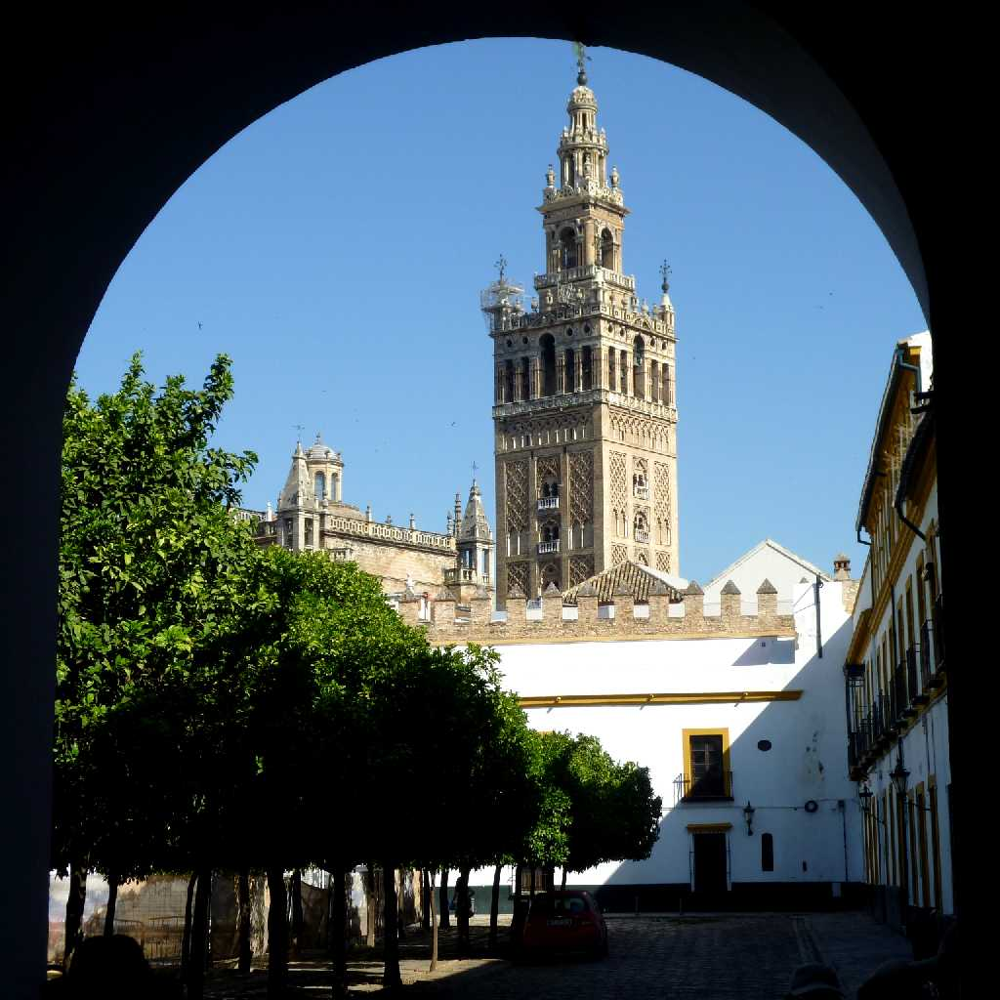
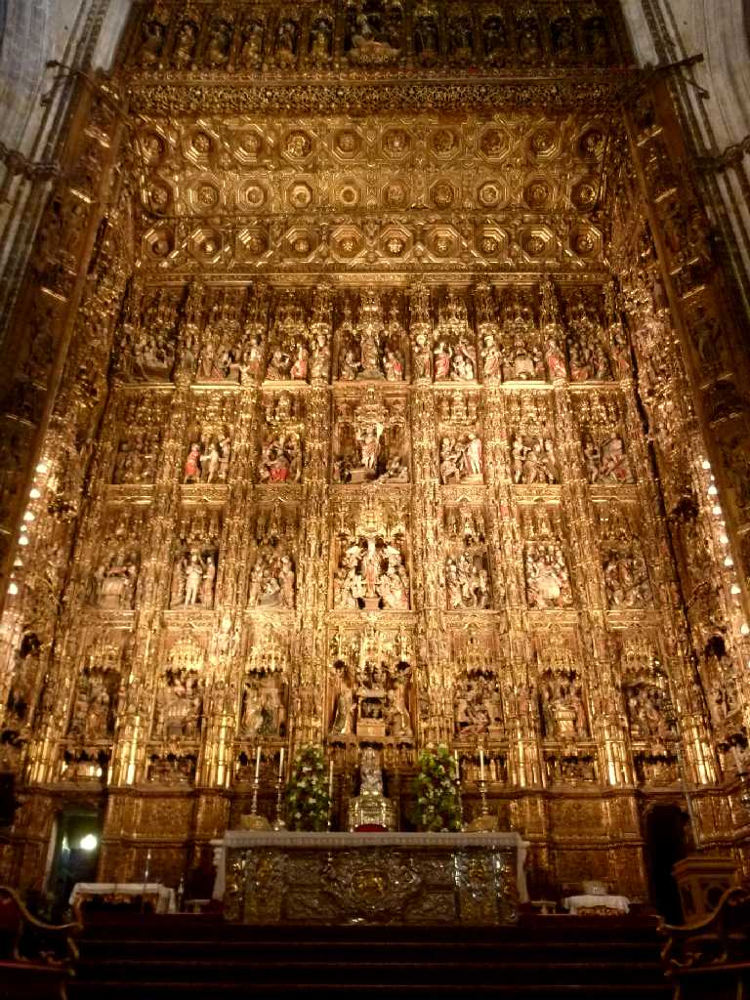
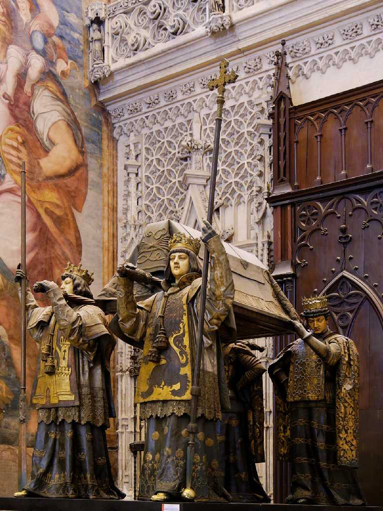
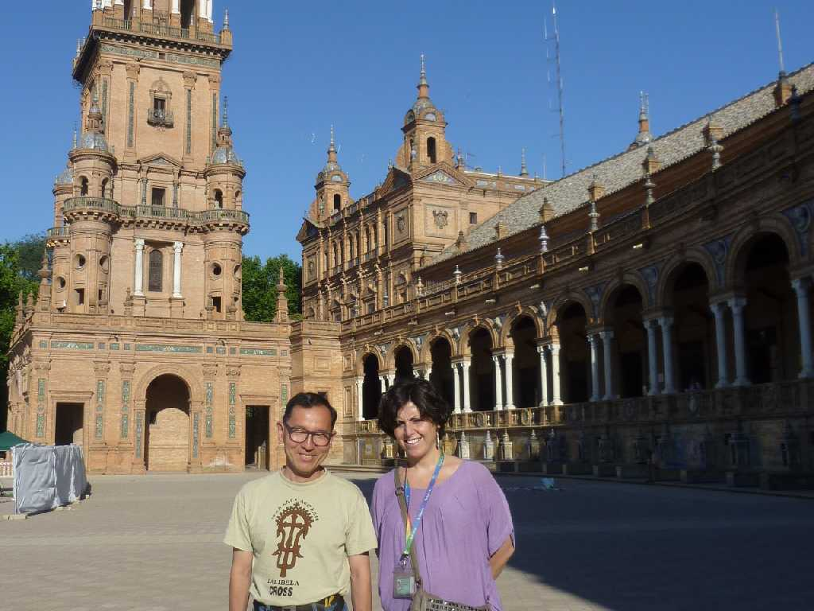

Giralda Catedral Sevilla
セルビアの顔ヒラルダの塔はセビリア大聖堂の鐘楼 １２世紀モスクのミナレットとして１４ｍ四方高さ７５ｍが創られ１６世紀に現在のキリスト教の鐘楼として高さ９５ｍに改築され２８の鐘が取り付けられた

Altar Catedral Sevilla
世界最大のゴシック様式の大聖堂にある世界最大の金で装飾された主祭壇

Tomb of Columbus in Cathedral Sevilla
１５世紀から１６世紀にかけモスクを改築した大聖堂で世界三大聖堂の一つ セビリア大聖堂にはコロンブスの墓が納められている

May 31 2010 Plaza de Espana Sevilla
１９２９年に万国博覧会の会場として創られたスペイン広場にはスペイン各地の逸話が特産のタイルで描かれている